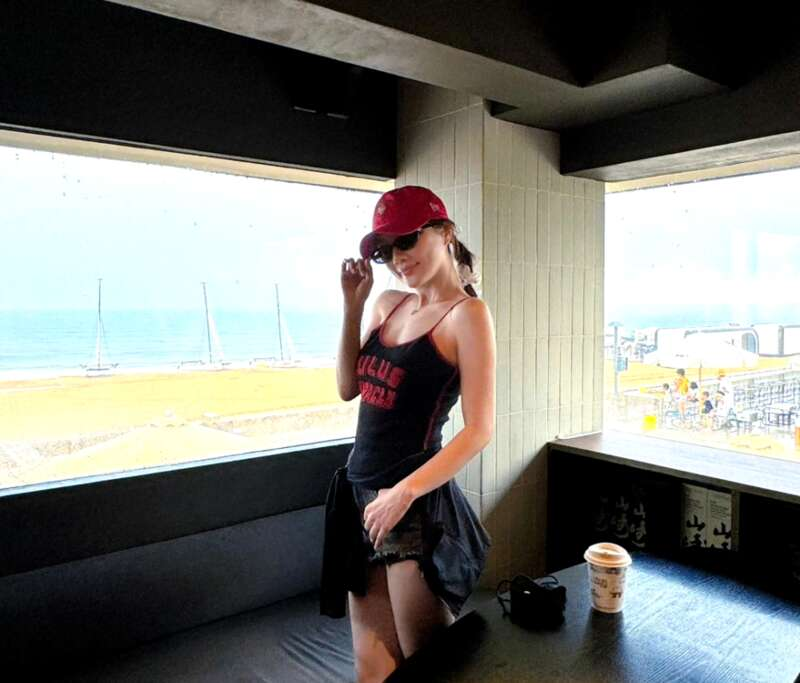
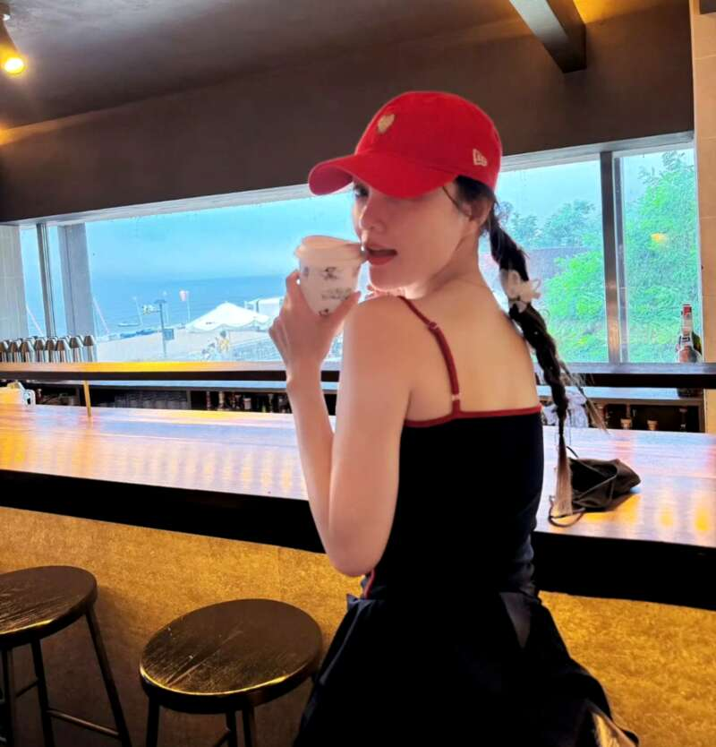
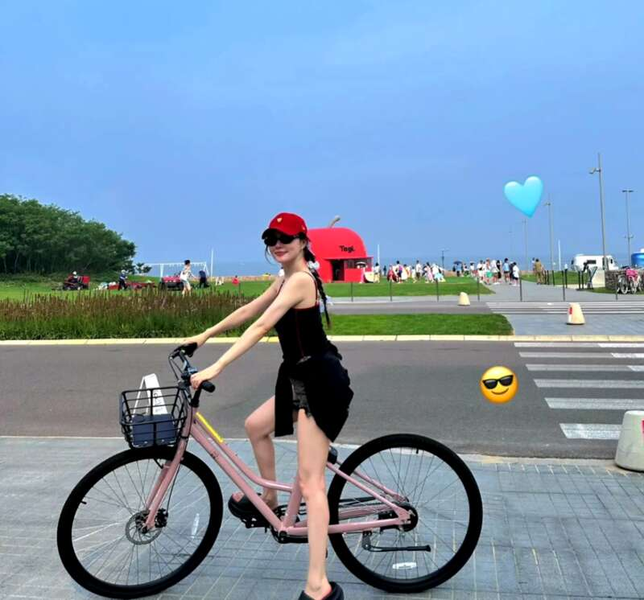
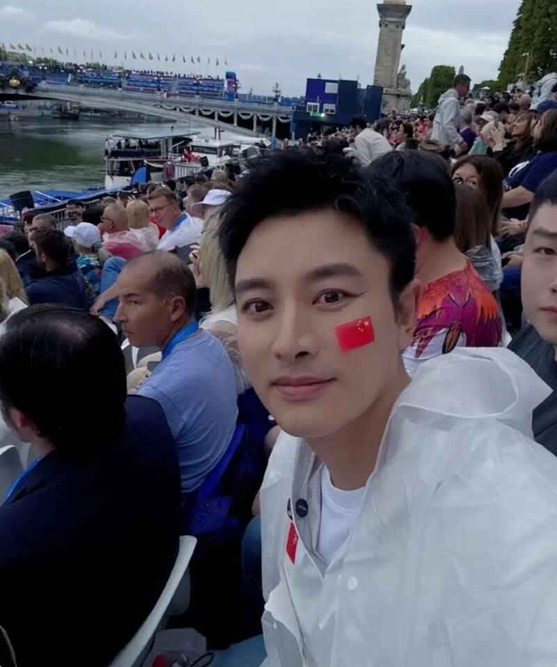
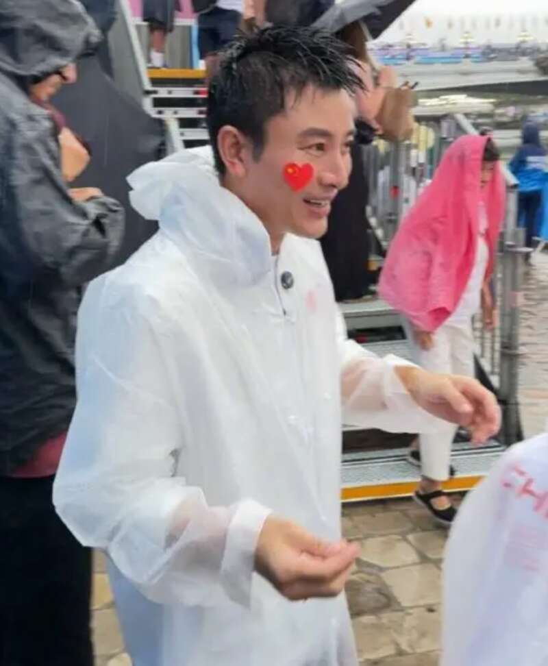
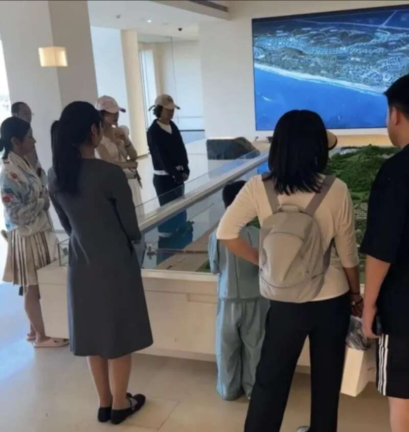

42岁李小璐不用工作的状态不要太棒了，她近日一个人跑到海边度假，骑着自行车好不惬意，李小璐高调晒出海边各种角度的摆拍，秀出曼妙身材，她脸上没了岁月的痕迹，自信大方的态度看来完全走出阴影啦。

李小璐不走高雅风，身穿吊带衫配热裤又甜又辣，更显得太年轻了，在暴晒的海边以及其他人的衬托下，李小璐肤白腿细少女感十足。尤其是是一对酒窝，甜到让人想哭。李小璐这一套穿搭特别符合海边度假辣妹风，甜馨也在她的影响下穿着越来越时尚了。


李小璐这么难得可以单独出海玩，也是放心女儿有爸爸的陪伴，贾乃亮带甜馨回到了老家哈尔滨，特地带女儿去动物园喂食各种宠物，甜馨没有失去童真，虽然父母离婚但各自都有爱，贾乃亮从奥运会开幕式回来之后就忙着带娃。
贾乃亮特地跑到巴黎参加了开幕式，举着国旗热泪盈眶，尤其是在中国参赛团乘船出现的时候，贾乃亮和其他中国人一样情不自禁地高呼，冒雨举国旗热泪盈眶，感动又高燃是，先不论贾乃亮的演技如何，光谈其人品还是非常正直爱国的。


不得不说，离婚对于甜馨而言还是有一定影响，至少她主要和妈妈一起生活，甜馨从小跟着李小璐见世面，七月份，李小璐带着甜馨在秦皇岛阿那亚看房，甜馨明显被晒黑了，反而是李小璐打扮精致，像是甜馨的姐姐。

甜馨开通了自己的社交平台，拥有自己的朋友圈，她也在今年成功从北京市鼎石学校毕业，12岁的甜馨其实快有李小璐高了，毕业的时候也哭成了泪人，李小璐为女儿准备了毕业蛋糕，全程陪伴甜馨完成了整个毕业典礼，这一幕真的很暖心，李小璐给甜馨不仅仅是好的物质条件，更是别人无法替代的爱。
Advertisements